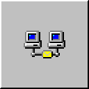

2025-12-18 - Підсумки 2025-го року: Серіал року
Зібрав список серіалів, що мені найбільше сподобалися цього року
Номінанти
Переможець
Alien: Earth
2025-12-10 - II by Voices From The Lake
Послухати на Bandcamp
Неймовірно красиве ембієнт-техно від італійців Донато Скарамуцці (відомого як Donato Dozzi) та Джузеппе Тіллієчі
2025-12-09 - The balance
Mortazavi describes finding a balance between concentration and letting go as the core element of his musical work.
Джерело: Опис Mohammad Reza Mortazavi в Spotify, на який я потрапив, коли отримав сповіщення про новий трек від Ricardo Villalobos “Swap”
2025-12-05 - Початок
Згадка про Web1
На створення цієї сторінки мене надихнула стаття, що прийшла в мій RSS-агрегатор від Kagi щодо (їх) Kagi Small Web. Це мені нагадало про той час, що журналісти зараз називають Web1, мережею 90-х (або “мережою тільки для читання”, хоча наразі я не читаю, а пишу). Я пригадав, наскільки було цікаво і захопливо користуватися інтернетом тоді, коли сайти були несхожими один на інший, існувала подорож інтернетом (це відображено в словах browsing, surfing, Netscape Navigator), та існував процес створення власного сайту через експерименти та дослідження.
Вигода від повернення до Web1
Наразі це більш цікавий виклик справжнього мінімалізма - триматися простоти, використання лише HTML і необхідної кількості стилей, не використовувати JavaScript, трекери. Це також і можливість більше часу приділити власному сайту та іншим способам провести час окрім як читати чергові нудотні новини про Трампа в соцмережах. Це можливість краще сфокусуватися на тому, що мені подобається, краще структурувати результати досліджень, більше часу приділяти аналізу. Це можливість отримати хоча б тисячну пункта до психічної стабільності під час зброїної агресії, окупації та геноциду українців з боку Московії.
Оновлення:
- 2025-12-09 - Дописав другий параграф

Відповісти імейлом
Про Web1 (чи то Web 1, чи то Web 1.0)
Джерело запиту Web1
Я проаналізував поточний рух Small Web і усвідомив, що він не випадковий. І що він не єдиний. В часи, коли відбувається масова маніпуляція інформацією за допомогою соціальних мереж Web 2.0 (наприклад, Ілоном Маском в соціальній мережі Twitter/X), перевантаження непотрібною інформацією або рекламою, що неможливо вимкнути (як в соціальний мережах Facebook та Instagram), є запит на дійсно вільний інтернет без обмежень, реклами та російської пропаганди. Також, є запит на лікування кліпового сприйняття інформації, FOMO, та зламаних дофамінових контурів як наслідок.
Про Web 2.0
Явище Web 2.0 було викликано тим, що інтернет поступово ставав популярнішим інструментом, з’явилися технології (зокрема, AJAX), і доступні потужності. Це дозволило декільком компаніям централізувати блогінг (та мікроблогінг), долучити до інтернету технічно неграмотних людей, а потім вільно використовувати приватну інформацію всіх для рекламної діяльності. “Web 2.0” це такий самий buzzword як і “AI”: вигаданий журналістами та інвесторами, що повідомляє про неіснуючу цінність.
Для користування Web1, на відміну від Web 2.0, потрібні базові знання HTML та CSS. І хоч вивчити це не складно, але вже обмежує публікацію лише тими людьми, що мають достатню нейропластичність та бажання вивчати та пробувати нове.
Про Web3 (3.0)
Наразі багато розмов про Web3 як намагання подалати проблеми Web2, але, по суті, це ускладнення системи без необхідності (всі інструменти завжди були в Web1). Та й вся інформація все одно не належить користувачеві, а провайдеру Web3, що не вирішує проблему використання (та злив) даних користувачів.